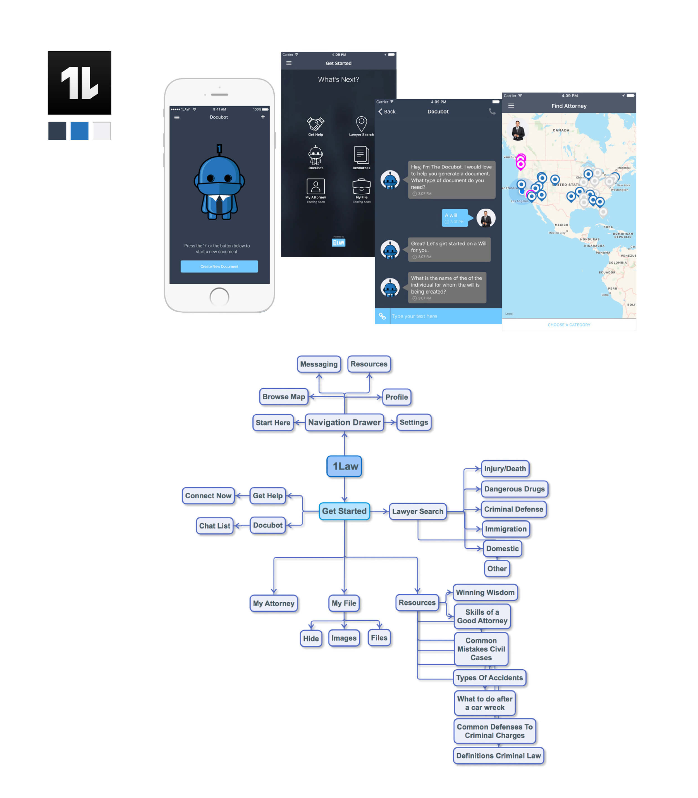

Legal Chat is a freelance mobile app design group project for Cloudmax Lab. My team was tasked to design a message application that connects attorney and client. It provides clients an ease of access to legal help and helps attorney to manage their clients efficiently.
Legal Chat是Cloudmax Lab的一个自由移动应用程序设计小组项目。我的团队的任务是设计一个连接律师和客户的消息应用程序。它为客户提供了获得法律帮助的便利，并帮助律师有效地管理他们的客户。
My role in this project is UX Researcher and Visual Designer.
我在这个项目中的角色是UX研究员和视觉设计师。
We used four weeks to conduct research, flow chart, interview,wireframes, and visual design. I revised some visual design basedon the feedback after presented to our client.
我们用了四周的时间进行研究、流程图、访谈、线框图和视觉设计。在提交给客户后，我根据反馈修改了一些视觉设计。
After conducting the research, we found out that lawyers and clients met each other mostly by referrals.
It was hard to find attorney and client whom were willing to be interviewed for research purposes.
We have a limitation to design our interface due to the pre-given wireframe as the main structure from our client.
经过研究，我们发现律师和客户见面大多是通过介绍认识的。
很难找到愿意为研究目的接受采访的律师和客户。
我们有一个设计界面的限制，由于来自客户预先给定的线框作为主要结构。
My team was tasked to design an application to connect attorney and client from all industries.
Keep track of all cases.
Registration process.
我的团队的任务是设计一个应用程序来连接来自所有行业的律师和客户。
保持追踪全部案件。
注册流程。
To test the inconsistencies, enhance and design a better user interface.
Provide ease of access for client to find attorney based on social network and location.
To communicate case efficiently via secure messaging.
Be able to archive and export chat logs. To make call logs and to schedule appointments.
确定app中，UI设计的不一致性和可用性问题领域。
发现错误和失败的潜在来源（例如，找不到功能，使用功能的困难，混淆消息）。
获取数据将告知Airbrush获得有效，高效且广受欢迎的用户界面。
提取对Airbrush有用的见解，使其在国际市场上变得更加友好和成功。
I. User Interview 用户访谈
我们采访了六名律师，他们分别从事移民、劳工/就业和商业诉讼、并购等方面的工作。
我们采访了六名客户(他们都有律师的法律地位的经验)，包括国际学生，建筑师和设计师。
我们针对律师的五个问题进行了调查:客户资源，沟通中遇到的问题，他们使用的沟通工具。
我们为客户做了五个问题:找律师，沟通中遇到的问题，沟通工具。
II. Affinity Diagram 亲和图
KEY FINDINGS 关键发现
客户选择律师主要是根据朋友的推荐进行面试。
律师从老客户/同事/朋友/家人那里获得新客户。
两人都喜欢面对面交流。电子邮件作为案例文件发送的主要工具。
Our Solution 解决方法
添加Linkedin和Facebook连接
增加视频通话和聊天功能。出口/分享聊天记录。
III. Competitive Analysis 竞品分析
AVVO通过提供透明的信息，使人们可以很容易地研究、发现和联系到合适的律师。它具有简单直观的视觉设计; 亮点:附近的律师推荐，阅读评论和背景信息，保存律师和消息，应用谷歌地图
1LAW将法律资源和律师整合在一个应用程序中。亮点:人工智能聊天机器人(Docubot),法律资源相结合,在应用程序消息和电话
3 key insights
来自我们客户端的原始线框图(左)创建了用户工作流来重新定义问题并进行改进。我们需要改进的主要功能是创建帐户、日程安排约会、应用程序内通话和消息、应用程序内推荐、导出/共享聊天日志
Iteration 迭代
这个项目对我来说最具挑战性的部分是找到一个平衡点，适合客户和律师使用这个应用程序。我能够和我的小组成员一起工作，从对整体设计方向的讨论中，我获得了不同的见解。我了解到，为了在如此短的时间内高效和多产，我们需要在不同的设计阶段不断地测试原型，这对整个过程非常重要。在向客户展示之后，我做了几个修改，因为我认为优化项目的每个细节和方面是很重要的。